From the first example, let's try another distribution plan first. Suppose we let 2 batteries support 2 computers
continuously, we will end up with 2 empty batteries and 1 full battery. Then the running time is fixed at
3 since we can't use the only battery left to support 2 computers simultaneously.
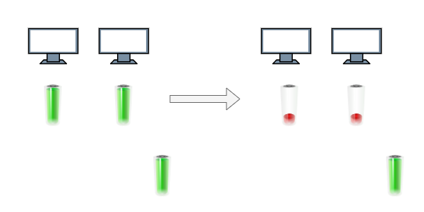
It implies that there is a strategy to distribute the batteries properly. Let's move on to finding the best patterns.
First, we simplify the original problem a little bit:
Suppose we have 4 computers (named A, B, C and D) and have to pick exactly 4 batteries. What is the maximum running time?
This is quite straightforward. We just pick the largest 4 batteries and let them support these 4 computers separately
(let's call the list that contains these 4 batteries live), and the running time is determined by the
smallest battery picked.
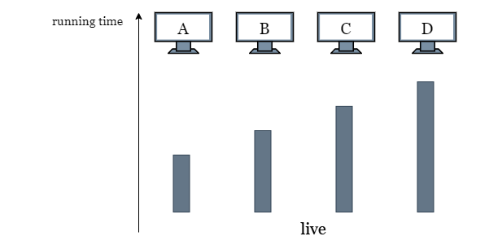
What if we are allowed to pick a 5th battery?
Let's pick the largest battery that isn't in use. Clearly, the smallest of these 4 batteries will be the bottleneck, so we use the power in the 5th battery to increase the running time of computer A that has the smallest battery.
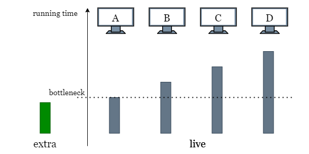
What if we are allowed to pick more batteries?
We can freely use every battery except the largest 4 to increase the total running time. Because we can freely swap
batteries in 0 time, all the extra power is interchangeable. We can take this extra power and "transfer" it to the
batteries in live. Let extra be the sum of all the extra power.
Let's say live is sorted. We try using some of our extra power to increase live[0] running time to live[1]. In the
process, extra -= live[1] - live[0].
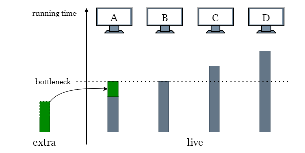
Now, live[0] = live[1]. Can we continue? We try increasing the running time to live[2].
However, not only would we need to increase live[1] to live[2], we also need to increase
live[0] to live[2] so it doesn't bottleneck the running time. We already spent some power
to increase live[0] to live[1], so we just need to spend twice as much power as the
difference live[2] - live[1].
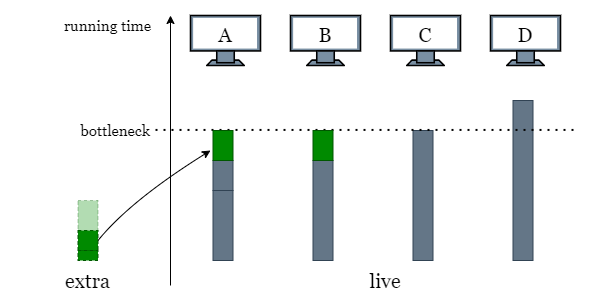
Now we have live[0] = live[1] = live[2]. If we want to increase the running time to live[3],
we need to spend three times as much power as the difference (live[3] - live[2]).
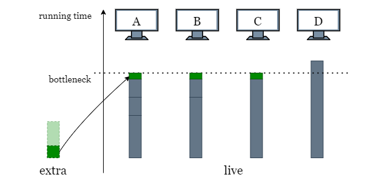
Oops, seems we are running out of extra power before reaching live[3], so the bottleneck is
decided by live[2]. We have some extra power remaining, so we do our best to increase the running time
by evenly splitting the remaining power to the computers (extra / 3).
What if we have an example where extra is large enough to support all batteries in live
becoming equal to live[n - 1]. Any remaining power in extra should similarly be evenly
split across all the computers to increase the final running time. The final running time is determined by live[n
- 1] plus the extra running time we can make using extra power, which is extra /
n.
To generalize, at each battery live[i], if we want to increase the running time to live[i +
1], we need to spend (i + 1) times as much power as (live[i + 1] - live[i]). With
this formula, we don't actually need to update the values of live. Since after each iteration, we
already know that live[0] = live[1] = ... = live[i].
We iterate through live until we either cannot afford to increase to live[i + 1] anymore,
or we manage to iterate through the entire array. In both cases, we do our best to evenly allocate the remaining
extra power.
You may be thinking that in the case below, since there is some unused power in the larger batteries (like the largest battery on the right), can we further increase the total running time using this unused power? The answer is NO.
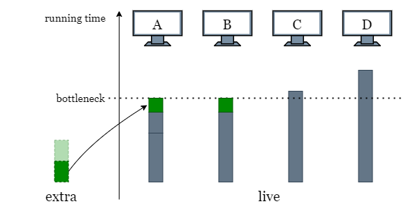
As shown in the following picture, suppose we do allocate the power "equally" by using the excess power of the largest battery (colored in red) on other computers. It means that there are times when the red battery is used on other computers, but the same battery also supports the computer D all the time. This contradicts the rule that one battery can't support more than one computer at the same time.
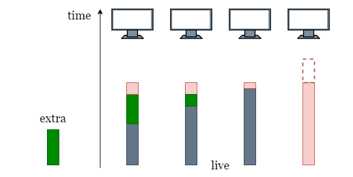
Therefore, we observe the pattern that:
If a battery
batteries[i]has more power than the total running time, there is no way we can use its excess power to further increase the running time. Therefore, once we have picked the largestnbatteries and assign them toncomputers, these batteries are tied to their computer and swapping them does not bring any longer running time.
Sort batteries.
Find the largest n batteries and assign them to n computers, these n
batteries are exclusively used by each computer and cannot be shared with other computers. Create an array
live that contains the largest n batteries in sorted order, which represents the
n computers.
Sum up the power of the remaining batteries as extra.
Iterate over live from 0 to n - 2, for each index i:
extra power can increase the running time of the first i computers from
live[i] to live[i + 1], then we subtract the required power from
extra and move on to the next index.
live[i] + extra / (i + 1).If there is still power left after the iteration, it means we can further increase the total running time of
n computers from live[n - 1] by extra / n. Therefore, return live[n
- 1] + extra / n.
Java
public class Solution {
public long maxRunTime(int n, int[] batteries) {
// Get the sum of all extra batteries.
Arrays.sort(batteries);
long extra = 0;
for (int i = 0; i < batteries.length - n; i++) {
extra += batteries[i];
}
// live stands for the n largest batteries we chose for n computers.
int[] live = Arrays.copyOfRange(batteries, batteries.length - n, batteries.length);
// We increase the total running time using 'extra' by increasing
// the running time of the computer with the smallest battery.
for (int i = 0; i < n - 1; i++) {
// If the target running time is between live[i] and live[i + 1].
if (extra < (long)(i + 1) * (live[i + 1] - live[i])) {
return live[i] + extra / (long)(i + 1);
}
// Reduce 'extra' by the total power used.
extra -= (long)(i + 1) * (live[i + 1] - live[i]);
}
// If there is power left, we can increase the running time
// of all computers.
return live[n - 1] + extra / n;
}
}
Python3
class Solution:
def maxRunTime(self, n: int, batteries: List[int]) -> int:
# Get the sum of all extra batteries.
batteries.sort()
extra = sum(batteries[:-n])
# live stands for the n largest batteries we chose for n computers.
live = batteries[-n:]
# We increase the total running time using 'extra' by increasing
# the running time of the computer with the smallest battery.
for i in range(n - 1):
# If the target running time is between live[i] and live[i + 1].
if extra // (i + 1) < live[i + 1] - live[i]:
return live[i] + extra // (i + 1)
# Reduce 'extra' by the total power used.
extra -= (i + 1) * (live[i + 1] - live[i])
# If there is power left, we can increase the running time
# of all computers.
return live[-1] + extra // n
Let mm
be the length of the input array batteries.
Time complexity: O(m⋅logm)O(m \cdot\log m)
We sort batteries\text{batteries} in place, it takes O(m⋅logm)O(m \cdot\log m) time.
Picking the largest n-th batteries from a sorted array takes O(n)O(n) time. Note that since n<mn < m, this term will be dominated.
Then we iterate over the remaing part of the batteries, the computation at each step
takes constant time. Thus it takes O(m)O(m) time to finish the iteration.
To sum up, the overall time complexity is O(m⋅logm)O(m \cdot\log m).
Space complexity: O(m)O(m)
sort method sorts a list using the Timsort algorithm, which is a
combination of Merge Sort and Insertion Sort and uses O(m)O(m) additional space.
In the previous approach, we began by selecting the largest n batteries (one for each computer) and then
assigning the remaining power extra to these computers using a greedy approach until we reach the
longest running time.
Alternatively, we can first set a target running time, target, then try to reach this running time using
all batteries.
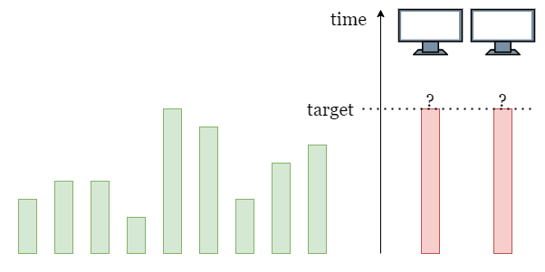
Here we still take advantage of the conclusion we reached at the end of the previous approach (Please refer to the previous approach):
target, we can use all of its power.target, we can only use target power from it.
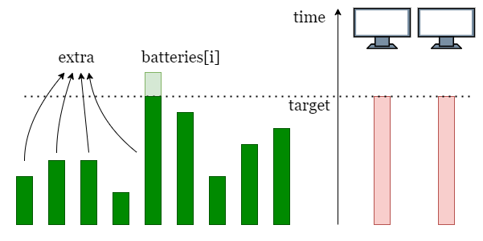
Therefore, we can traverse through batteries and collect all the power that can be used. If the sum of
collected power is larger than or equal to target * n, all computers can run for target
time.
As shown in the picture above, suppose we set a running time target, then we collect power from all
batteries (colored in green). Finally, we check if the sum of the collected power is larger than or equals to target
* 2.
How to find the largest running time?
Instead of trying every target from 1 until finding the largest possible running time, we
can take advantage of binary search to locate the largest target faster than linear search.
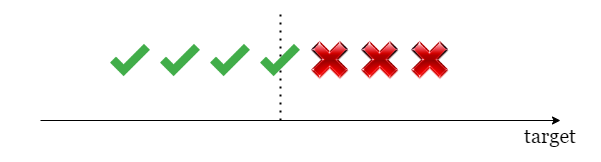
Initially, we set the left boundary as 1 as the minimum possible running time. Assuming we can use all
the power perfectly, the maximum running time is sum(batteries) / n, so we set the right boundary as
sum(batteries) / n. As a result, the largest target is limited to the inclusive range
[left, right], and we can apply binary search in this range to find it.
Initialize the boundaries of the search space as left = 1, and right = sum(batteries) /
n.
While left < right:
target = right - (right - left) / 2.n computers run target time. Iterate over
batteries and record extra, the accumulative sum of min(batteries[i],
target).
Check if extra >= n * target:
left = target and repeat step 2.right = target - 1 and repate step 2.Once the binary search ends, return left.
Java
public class Solution {
public long maxRunTime(int n, int[] batteries) {
long sumPower = 0;
for (int power : batteries)
sumPower += power;
long left = 1, right = sumPower / n;
while (left < right){
long target = right - (right - left) / 2;
long extra = 0;
for (int power : batteries)
extra += Math.min(power, target);
if (extra >= (long)(n * target))
left = target;
else
right = target - 1;
}
return left;
}
}
Python3
class Solution:
def maxRunTime(self, n: int, batteries: List[int]) -> int:
left, right = 1, sum(batteries) // n
while left < right:
target = right - (right - left) // 2
extra = 0
for power in batteries:
extra += min(power, target)
if extra // n >= target:
left = target
else:
right = target - 1
return left
Let mm
be the length of the input array batteries and kk
be the maximum power of one battery.
Time complexity: O(m⋅logk)O(m \cdot\log k)
Initially, we set 1 as the left boundary and sum(batteries) / n as the
right boundary. Thus it takes O(log(m⋅kn))O(\log (\frac{m\cdot k}{n})) steps to locate the maximum running
time in the worst-case scenario.
At each step, we need to iterate over batteries to add up the power that can be used,
which takes O(m)O(m) time.
Therefore, the overall time complexity is O(m⋅log(m⋅kn))=O(m⋅logk)O(m \cdot\log (\frac{m\cdot k}{n})) = O(m\cdot \log k)
,k≫m,n, k \gg m, n
Space complexity: O(1)O(1)
extra, and the accumulative sum of extra, which only takes constant space.